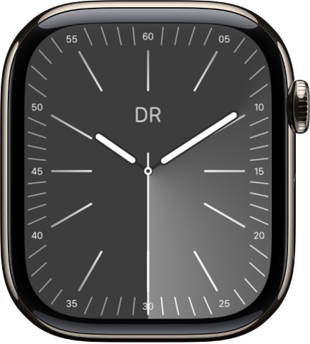

“太阳指针”中的光影在一天中随太阳位置不断变换。
下方的文件数包括本地化资源。固件名称键能确认包的归属；组件的圆屏点击边界、亮屏过渡与 AOD 对照均待设备验证。
原始包 已解析属性表 Mach-O 方法与成员 ARM64 汇编 解出的图集
.strings × 88 .plist × 2 .car × 1 .metallib × 1 无扩展名 × 1
原始包 已解析属性表 Mach-O 方法与成员 ARM64 汇编 解出的图集
.strings × 88 .plist × 2 .car × 1 .metallib × 1 无扩展名 × 1
原始包 已解析属性表 Mach-O 方法与成员 ARM64 汇编 解出的图集
.strings × 88 .plist × 2 .car × 1 .metallib × 1 无扩展名 × 1
NTKGladiusFaceBundle.bundleFACE_STYLE_GLADIUS_DESCRIPTIONgladius.special.graphitegladius.special.silvergladius.special.goldGLADIUS_STYLE_EDIT_OPTION_IGLADIUS_LIGHT_EDIT_OPTION_BRIGHTGLADIUS_LIGHT_EDIT_OPTION_DYNAMICGLADIUS_EDIT_MODE_LABEL_LIGHTGLADIUS_STYLE_EDIT_OPTION_IIGLADIUS_LIGHT_EDIT_OPTION_DARKGLADIUS_STYLE_EDIT_OPTION_III色组与设备条件 Gladius.color.plist 共享色组与默认值
-[NTKGladiusColorPalette tritium_minuteTickDay];-[NTKGladiusColorPalette tritium_hourTickDay];-[NTKGladiusColorPalette tritium_bottomComplicationNight];-[NTKGladiusColorPalette tritium_topComplicationNight];-[NTKGladiusColorPalette tritium_topComplicationDay];-[NTKGladiusColorPalette tritium_minuteTickNight];-[NTKGladiusColorPalette tritium_bottomComplicationDay];-[NTKGladiusColorPalette tritium_hourTickNight];-[NTKGladiusColorPalette tritium_hourTickEndDay];-[NTKGladiusColorPalette _tritium_primaryColor];-[NTKGladiusColorPalette tritium_hourMinuteHandInlay];-[NTKGladiusFaceView tritium_didTransitionToTritiumOn];-[NTKGladiusFaceView tritium_didTransitionToTritiumOff];-[NTKGladiusFaceView tritium_usesWidgetTransitionPresetColors];-[NTKGladiusFaceView tritium_transitionToTritiumOnWithProgress:];-[NTKGladiusFaceView tritium_createFaceAnimator];-[NTKGladiusFaceView tritium_transitionToFrameSpecifier:];-[NTKGladiusFaceView _applyPalette:forTritium:];-[NTKGladiusFaceView _applyTritiumProgress:];-[NTKGladiusFaceView tritium_transitionToTritiumOffWithProgress:];-[NTKGladiusFaceView _tritium_updateComplicationColors];-[NTKGladiusFaceView tritiumColorPalette];-[NTKGladiusColorPalette hourMinuteHandInlay];-[NTKGladiusColorPalette minuteTickNight];-[NTKGladiusColorPalette secondHandNight];-[NTKGladiusColorPalette minuteTickStart];-[NTKGladiusColorPalette hourMinuteHandStrokeDay];-[NTKGladiusColorPalette hourMinuteHandStrokeNight];-[NTKGladiusColorPalette hourTickDay];-[NTKGladiusColorPalette hourTickEndDay];-[NTKGladiusColorPalette hourTickEndNight];-[NTKGladiusColorPalette hourTickNight];-[NTKGladiusColorPalette minuteTickDay];-[NTKGladiusColorPalette minuteTickEnd];-[NTKGladiusColorPalette secondHandDay];-[NTKGladiusSecondHandLightingDelegate stopSecondHandLightingAnimation];-[NTKGladiusSecondHandLightingDelegate startSecondHandLightingAnimationAtDate:];-[NTKGladiusSecondHandLightingDelegate updateLightingOverride];-[NTKGladiusSecondHandLightingDelegate lowFrequencyLightingTimerFired];-[NTKGladiusSecondHandLightingDelegate setOverrideDate:duration:];-[NTKGladiusColorPalette tritium_minuteTickDay];-[NTKGladiusColorPalette _hourTickDay];-[NTKGladiusColorPalette tritium_hourTickDay];-[NTKGladiusColorPalette _hourMinuteHandStrokeDay];-[NTKGladiusColorPalette _minuteTickNight];-[NTKGladiusColorPalette tritium_minuteTickNight];-[NTKGladiusColorPalette _minuteTickDay];-[NTKGladiusColorPalette _hourTickNight];-[NTKGladiusColorPalette _secondHandNight];-[NTKGladiusColorPalette _secondHandDay];-[NTKGladiusColorPalette tritium_hourTickNight];-[NTKGladiusColorPalette tritium_hourTickEndDay];-[NTKGladiusColorPalette tritium_hourMinuteHandInlay];-[NTKGladiusColorPalette _hourMinuteHandStrokeNight];+[NTKGladiusDialView minorMinuteAngleAtIndex:device:];+[NTKGladiusDialView longHourTickRadiusForDevice:];-[NTKGladiusDialView _hourTickPositionAtIndex:forStyle:];-[NTKGladiusDialView _createMinorMinuteLayers];-[NTKGladiusDialView _updateMajorHourTickAtIndex:forStyle:];-[NTKGladiusDialView _hourTickLengthAtIndex:forStyle:];-[NTKGladiusDialView _tickWithLength:width:position:angle:];-[NTKGladiusFaceView tritium_didTransitionToTritiumOn];-[NTKGladiusFaceView tritium_didTransitionToTritiumOff];-[NTKGladiusFaceView tritium_usesWidgetTransitionPresetColors];-[NTKGladiusFaceView _applyTransitionFraction:fromOption:toOption:forCustomEditMode:slot:];-[NTKGladiusFaceView tritium_transitionToTritiumOnWithProgress:];-[NTKGladiusFaceView tritium_createFaceAnimator];-[NTKGladiusFaceView tritium_transitionToFrameSpecifier:];-[NTKGladiusFaceView tritium_transitionToTritiumOffWithProgress:];-[NTKGladiusFaceView _getComplicationColorsTop:bottom:palette:nightFraction:editingFraction:secondHandAngle:];-[NTKGladiusFaceView _hourMinuteHandStrokeColorForLight:];-[NTKGladiusFaceView _secondHandColorForLight:];-[NTKGladiusFaceView _updateDateOverrideAnimationWithStopTime:];-[NTKGladiusFaceView _configureForTransitionFraction:fromEditMode:toEditMode:];-[NTKGladiusFaceView setOverrideDate:duration:];-[NTKGladiusFaceView nominalAnimationEndForHandView:];-[NTKGladiusFaceView nominalAnimationStart:forHandView:];-[NTKGladiusFaceView overrideAnimationApplier:zRotation:forHandView:];-[NTKGladiusHandsView _startNewTimeAnimation];-[NTKGladiusHandsView _applyInstantaneousSecondHandTransformForDate:];-[NTKGladiusHandsView setStretchySecondHandData:];-[NTKGladiusHandsView _stopTimeAnimation];-[NTKGladiusHandsView secondHandConfiguration];-[NTKGladiusHandsView _timeAnimationFramesPerSecondForDevice:];-[NTKGladiusHandsView stretchySecondHandData];-[NTKGladiusHandsView applyInstantaneousSecondHandTransformForAngle:];-[NTKGladiusHandsView minuteHandConfiguration];-[NTKGladiusHandsView setOverrideDate:duration:];-[NTKGladiusHandsView createSecondHandView];-[_TtC20NTKGladiusFaceBundle14NTKGladiusQuad setOverrideDate:duration:];-[_TtC20NTKGladiusFaceBundle14NTKGladiusQuad initWithDevice:stretchySecondHandData:];-[_TtC20NTKGladiusFaceBundle31NTKGladiusLightSpillCoordinator stopSecondHandLightingAnimation];-[_TtC20NTKGladiusFaceBundle31NTKGladiusLightSpillCoordinator startSecondHandLightingAnimationAtDate:];-[_TtC20NTKGladiusFaceBundle31NTKGladiusLightSpillCoordinator setMinorMinuteLayers:];-[_TtC20NTKGladiusFaceBundle31NTKGladiusLightSpillCoordinator minorMinuteLayers];-[_TtC20NTKGladiusFaceBundle31NTKGladiusLightSpillCoordinator handleDialPaletteChangeWithHourStartColors:minuteStartColor:minuteEndColor:hourEndColor:hourTextColor:];-[_TtC20NTKGladiusFaceBundle31NTKGladiusLightSpillCoordinator setOverrideDate:duration:];-[_TtC20NTKGladiusFaceBundle32NTKGladiusStretchySecondHandData initWithDevice:];-[_TtC20NTKGladiusFaceBundle32NTKGladiusStretchySecondHandData sampleAtAngle:includeBaseRadius:];-[_TtC20NTKGladiusFaceBundle32NTKGladiusStretchySecondHandData init];-[NTKGladiusColorPalette background];-[NTKGladiusColorPalette editing];-[NTKGladiusColorPalette hourMinuteHandInlay];-[NTKGladiusColorPalette minuteTickNight];-[NTKGladiusColorPalette secondHandNight];-[NTKGladiusColorPalette minuteTickStart];-[NTKGladiusColorPalette bottomComplicationDay];-[NTKGladiusColorPalette bottomComplicationNight];-[NTKGladiusColorPalette hourMinuteHandStrokeDay];-[NTKGladiusColorPalette hourMinuteHandStrokeNight];-[NTKGladiusColorPalette hourTickDay];-[NTKGladiusColorPalette hourTickEndDay];-[NTKGladiusColorPalette hourTickEndNight];-[NTKGladiusColorPalette hourTickNight];-[NTKGladiusColorPalette minuteTickDay];-[NTKGladiusColorPalette minuteTickEnd];-[NTKGladiusColorPalette secondHandDay];-[NTKGladiusColorPalette topComplicationDay];-[NTKGladiusColorPalette topComplicationNight];-[NTKGladiusColorPalette configurationDidChange:];-[NTKGladiusColorPalette tritium_minuteTickDay];-[NTKGladiusColorPalette _hourTickDay];-[NTKGladiusColorPalette tritium_hourTickDay];-[NTKGladiusColorPalette _topComplicationNight];-[NTKGladiusColorPalette tritium_bottomComplicationNight];-[NTKGladiusColorPalette _isLightColor];-[NTKGladiusColorPalette tritium_topComplicationNight];-[NTKGladiusColorPalette _hourMinuteHandStrokeDay];-[NTKGladiusColorPalette _minuteTickNight];-[NTKGladiusColorPalette tritium_topComplicationDay];-[NTKGladiusColorPalette tritium_minuteTickNight];-[NTKGladiusColorPalette _minuteTickDay];-[NTKGladiusColorPalette _hourTickNight];-[NTKGladiusColorPalette _topComplicationDay];-[NTKGladiusColorPalette _secondHandNight];-[NTKGladiusColorPalette _background];-[NTKGladiusColorPalette swatch];-[NTKGladiusColorPalette _secondHandDay];-[NTKGladiusColorPalette tritium_bottomComplicationDay];-[NTKGladiusColorPalette _bottomComplicationNight];-[NTKGladiusColorPalette _bottomComplicationDay];-[NTKGladiusColorPalette tritium_hourTickNight];-[NTKGladiusColorPalette tritium_hourTickEndDay];-[NTKGladiusColorPalette _tritium_primaryColor];-[NTKGladiusColorPalette tritium_hourMinuteHandInlay];-[NTKGladiusColorPalette _hourMinuteHandStrokeNight];-[NTKGladiusDialView setPalette:];-[NTKGladiusDialView colorFraction];-[NTKGladiusDialView setColorFraction:];-[NTKGladiusDialView initWithDevice:style:palette:];-[NTKGladiusDialView _applyPalette];-[NTKGladiusDialView palette];+[NTKGladiusFace _richComplicationSlotsForDevice:];+[NTKGladiusFace _orderedComplicationSlots];+[NTKGladiusFace _defaultSelectedComplicationSlotForDevice:];-[NTKGladiusFace _complicationSlotDescriptors];-[NTKGladiusFace _numberOfOptionsForCustomEditMode:slot:];-[NTKGladiusFace _defaultOptionForCustomEditMode:slot:];-[NTKGladiusFace _indexOfOption:forCustomEditMode:slot:];-[NTKGladiusFace _optionAtIndex:forCustomEditMode:slot:];-[NTKGladiusFaceView createFaceColorPalette];-[NTKGladiusFaceView tritium_usesWidgetTransitionPresetColors];-[NTKGladiusFaceView _applyTransitionFraction:fromOption:toOption:forCustomEditMode:slot:];-[NTKGladiusFaceView _applyBreathingFraction:forCustomEditMode:slot:];-[NTKGladiusFaceView _applyOption:forCustomEditMode:slot:];-[NTKGladiusFaceView _configureComplicationView:forSlot:];-[NTKGladiusFaceView colorPalette];-[NTKGladiusFaceView _loadLayoutRules];-[NTKGladiusFaceView _applyPalette:forTritium:];-[NTKGladiusFaceView _colorFractionForNightFraction:];-[NTKGladiusFaceView _editingFractionForEditMode:];-[NTKGladiusFaceView _getComplicationColorsTop:bottom:palette:nightFraction:editingFraction:secondHandAngle:];-[NTKGladiusFaceView _allowsEditingSliderEditableColorsForSlot:];-[NTKGladiusFaceView _hourMinuteHandStrokeColorForLight:];-[NTKGladiusFaceView _secondHandColorForLight:];-[NTKGladiusFaceView _applyPalette:];-[NTKGladiusFaceView _updateTopComplicationWithColor:];-[NTKGladiusFaceView _tritium_updateComplicationColors];-[NTKGladiusFaceView _getComplicationColorsTop:bottom:palette:nightFraction:editingFraction:];-[NTKGladiusFaceView _applyRubberBandingFraction:forCustomEditMode:slot:];-[NTKGladiusFaceView tritiumColorPalette];-[NTKGladiusFaceView _updateBottomComplicationWithColor:];-[_TtC20NTKGladiusFaceBundle14NTKGladiusQuad setColor:];-[_TtC20NTKGladiusFaceBundle31NTKGladiusLightSpillCoordinator handleDialPaletteChangeWithHourStartColors:minuteStartColor:minuteEndColor:hourEndColor:hourTextColor:];